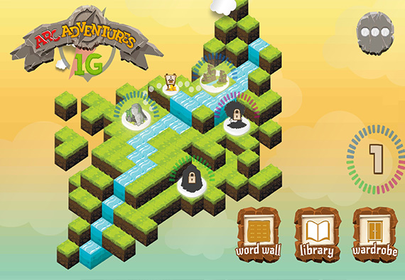

About
Shane, currently residing in West Chester, Pennsylvania, is a multidimensional talent who seamlessly fuses creativity and technical skills. Shane holds a degree from West Chester University where he began many of his technical, musical and entrepreneurial pursuits. He is a co-founder of Vashta Entertainment, a video game company which has gained alcolades and millions of downlaods. He also created The Exclusive, an indie rock group that has toured coast to coast.
On top of all this Shane is an adept full-stack developer, proficient in Python, HTML, CSS, JavaScript, SQL and more. He's not only adept at crafting personal websites but has also developed practical tools like media converters. In the professional realm, Shane has played a pivotal role in managing large data reports, tools, digital assets, and e-commerce platforms. His unique blend of technical expertise and creative finesse makes him a remarkable force in both the artistic and technological spheres.
Next (Developer)
Developer
Shane is a proficient full-stack developer, well-versed in a spectrum of languages including Python, HTML, CSS, JavaScript, and SQL. With an arsenal of technical skills, he's crafted websites that embody his personal endeavors, including the platform you're currently exploring. Beyond websites, Shane's innovation extends to practical tools such as media converters, showcasing his ability to bridge creativity with functionality.
In his professional capacity, Shane's expertise has been instrumental in managing and creating comprehensive reports and tools tailored to the needs of numerous school districts. His adeptness also shines in digital asset management and the orchestration of e-commerce sites, demonstrating his prowess in both technological problem-solving and strategic business acumen. With a robust portfolio encompassing diverse digital landscapes, Shane exemplifies the modern developer, seamlessly navigating between code and creativity to deliver impactful solutions.
Development Samples
Back (About) Next (Music)
Music
A seasoned musician based in West Chester, Pennsylvania, whose musical journey began in early years and flourished through dedicated studies in music theory and composition. With a penchant for innovation, his compositions have found their way into video games, animated shorts, and various artistic ventures.
As the creator of "The Exclusive," an indie-pop rock group Shane quickly recruited his good friend and production partner Nick Allen. Shane's musical influence extended while touring nationally with The Exclusive, captivating audiences with their live performances. His music transcends mere entertainment, resonating with profound emotions and narratives that leave a lasting impact. From digital soundscapes to live stages, Shane's musical artistry shines, marking him as a versatile and accomplished composer and performer.
The Exclusive Official Website
Composition Samples
Back (Developer) Next (Games)
Vashta Entertainment
During his time at West Chester, Shane co-founded Vashta Entertainment with his creative partner Bret Black, a venture that has left an indelible mark in the realm of video games. With a collective download count surpassing a million across four standout titles, Vashta Entertainment's creations have captivated the gaming world. Shane's ability to seamlessly blend innovation with immersive storytelling is evident in each pixel and narrative choice, showcasing his prowess in both creativity and technology. As Vashta Entertainment continues to craft experiences that resonate, Shane's legacy in the gaming industry solidifies, a testament to his multifaceted artistic and entrepreneurial journey.
Official Website

Shane also worked in a creative and technical capacity during the making educational game ARC Adventures. A game released under American Reading Company. This game sits in hundreds of districts across America.
Back (Music) Next (About)